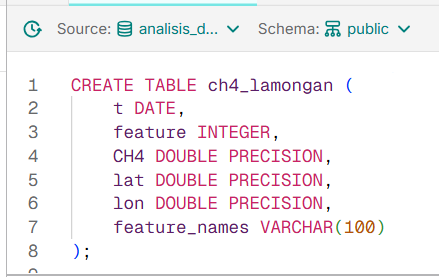
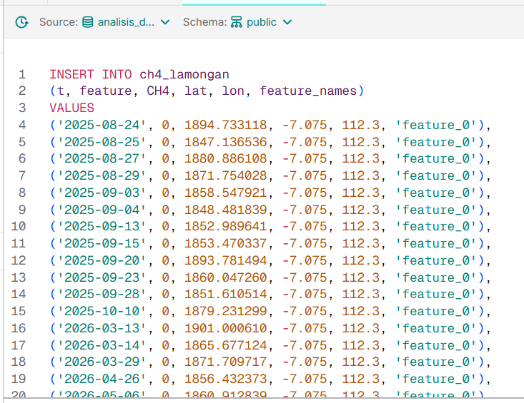
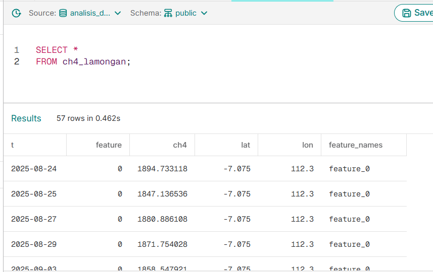
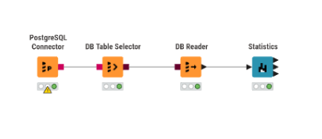
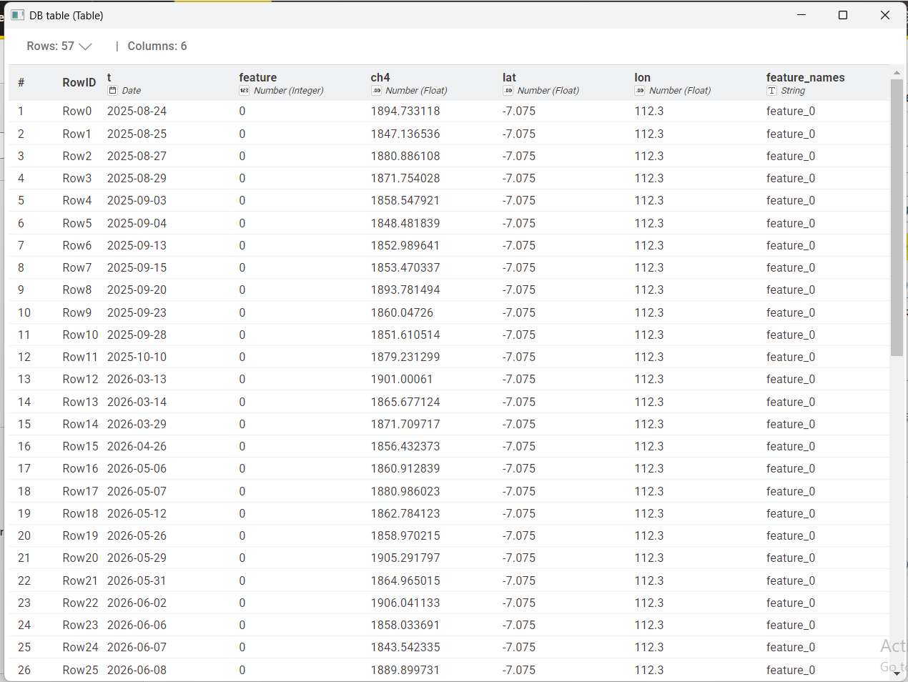
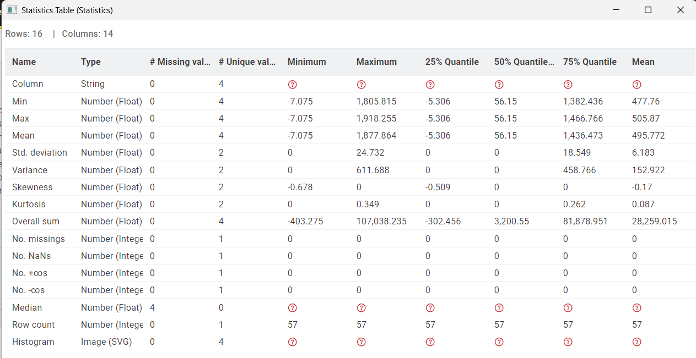
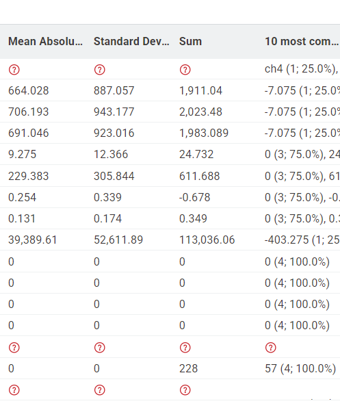

Analisis Statistik Data Menggunakan Aiven dan KNIME#
Proses pemindahan data dari file CSV ke cloud database menggunakan Aiven. Data yang telah disimpan pada Aiven kemudian dihubungkan ke KNIME untuk dilakukan analisis statistik.
Tahapan yang dilakukan meliputi:
Memindahkan data CSV ke Aiven.
Mengambil data dari Aiven ke KNIME.
Menampilkan statistik menggunakan KNIME.
Menjelaskan properti statistik yang dihasilkan.
Memberikan contoh perhitungan dari setiap properti statistik.
Menyimpulkan hasil analisis.
1. Memindahkan Data CSV ke Aiven#
Data yang digunakan merupakan data yang disimpan dalam format CSV. Data tersebut kemudian dipindahkan ke database PostgreSQL yang tersedia pada Aiven. Aiven digunakan sebagai cloud database untuk menyimpan dataset sehingga data dapat diakses melalui koneksi database dari KNIME.
1.1 Membuat Tabel pada Aiven#
Langkah pertama adalah membuat tabel pada database PostgreSQL Aiven. Tabel yang digunakan diberi nama ch4_lamongan.

Kolom |
Keterangan |
|---|---|
|
Menyimpan tanggal pengamatan |
|
Menyimpan nilai fitur |
|
Menyimpan nilai CH4 |
|
Menyimpan latitude |
|
Menyimpan longitude |
|
Menyimpan nama fitur |
1.2 Memasukkan Data ke Aiven#
Setelah tabel berhasil dibuat, seluruh data dari file CSV dimasukkan ke dalam tabel ch4_lamongan.
Data dimasukkan menggunakan perintah INSERT. Setiap baris pada dataset dimasukkan sebagai satu record ke dalam database.
Contoh perintah yang digunakan:

1.3 Mengecek Data#
Setelah seluruh data dimasukkan, dilakukan pengecekan untuk memastikan data telah berhasil tersimpan pada database.

Hasil pengecekan menunjukkan bahwa data telah berhasil tersimpan pada tabel ch4_lamongan.
2. Mengambil Data sari Aiven ke KNIME#
Setelah data berhasil disimpan pada Aiven, langkah selanjutnya adalah mengambil data tersebut menggunakan KNIME.
KNIME dihubungkan dengan database PostgreSQL Aiven menggunakan beberapa node.

2.1 PostgreSQL Connector#
Digunakan untuk menghubungkan KNIME dengan database PostgreSQL yang terdapat pada Aiven.
Pada konfigurasi PostgreSQL Connector dimasukkan informasi koneksi dari Aiven, yaitu:
Hostname
Port
Database Name
Username
Password
Setelah konfigurasi selesai, koneksi dijalankan untuk memastikan KNIME dapat terhubung dengan database Aiven.
2.2 DB Table Selector#
Setelah koneksi berhasil dibuat, DB Table Selector digunakan untuk memilih tabel yang akan digunakan.
Schema name : public
Table name : ch4_lamongan
Dengan memilih tabel tersebut, KNIME akan mengambil data yang terdapat pada tabel ch4_lamongan.

2.3 DB Reader#
DB Reader digunakan untuk membaca data dari database berdasarkan tabel yang telah dipilih pada DB Table Selector.
Data yang berhasil dibaca kemudian dapat digunakan sebagai input untuk proses analisis statistik pada KNIME.
2.4 Statistics#
Setelah data berhasil dibaca menggunakan DB Reader, data diteruskan ke node Statistics.
Node Statistics digunakan untuk menghasilkan statistik deskriptif dari dataset.
Statistik deskriptif digunakan untuk mengetahui karakteristik data, seperti nilai terkecil, nilai terbesar, rata-rata, nilai tengah, penyebaran data, dan bentuk distribusi data.
Beberapa statistik yang dihasilkan oleh KNIME antara lain:
Min
Mean
Median
Max
Std. Dev.
Kurtosis
Skewness
No. Missing
No. NaNs
No. +unlimited
No. -unlimited
Overall Sum
sehingga hasil statisticsnya:


3. Properti Statistik#
3.1 Min#
Min atau minimum merupakan nilai terkecil yang terdapat pada suatu kolom.
Contoh : Data = 2, 4, 6, 8, 10
Nilai terkecil adalah : 2
3.2 Mean#
Mean atau rata-rata merupakan jumlah seluruh nilai data yang dibagi dengan jumlah data.
Keterangan:
Σx = jumlah seluruh nilai data
n = jumlah data
contoh:
Σx = 2 + 4 + 6 + 8 + 10 = 30
n = 5
Mean = 30 / 5 = 6
3.3 Median#
Median merupakan nilai tengah setelah seluruh data diurutkan dari nilai terkecil hingga terbesar.
Contoh: 2, 4, 6, 8, 10
Nilai yang berada di tengah adalah 6.
3.4 Max#
Max atau maksimum merupakan nilai terbesar yang terdapat pada suatu kolom.
contoh : Data = 2, 4, 6, 8, 10
Nilai terbesar adalah: 10
3.5 Std.Dev#
Std. Dev. atau Standard Deviation menunjukkan tingkat penyebaran data terhadap nilai rata-ratanya.
Semakin besar nilai standard deviation, semakin besar penyebaran data dari nilai rata-ratanya.
Sebaliknya, standard deviation yang kecil menunjukkan bahwa nilai data cenderung berada dekat dengan rata-ratanya.
contoh :
mean = 6
x |
x - Mean |
(x - Mean)² |
|---|---|---|
2 |
-4 |
16 |
4 |
-2 |
4 |
6 |
0 |
0 |
8 |
2 |
4 |
10 |
4 |
16 |
Total |
40 |
Variance = 40/5 = 8
std.dev = √8 = 2,83
3.6 Kurtosis#
Kurtosis digunakan untuk menggambarkan karakteristik distribusi data, terutama bentuk bagian tengah dan ekor distribusi.
rumus : \( Kurtosis = [ (1/n) Σ(x - μ)^4 ] / σ^4 \)
Keterangan:
n = jumlah data
x = nilai data
μ = mean
σ = standard deviation
Nilai kurtosis dapat berbeda tergantung metode atau koreksi statistik yang digunakan oleh perangkat lunak.
3.7 Skewness#
Skewness menunjukkan tingkat kemencengan atau ketidaksimetrisan distribusi data.
Interpretasi secara umum:
Skewness mendekati 0 menunjukkan distribusi data relatif simetris.
Skewness positif menunjukkan - distribusi cenderung menceng ke kanan.
Skewness negatif menunjukkan distribusi cenderung menceng ke kiri.
3.8 No.Missing#
No. Missing menunjukkan jumlah data yang kosong atau tidak memiliki nilai.
Contoh : 2,4,kosong,8,10
Terdapat satu nilai kosong,sehingga no,missingnya 1.
3.9 No. +unlimited#
No. +unlimited menunjukkan jumlah nilai positif tak hingga atau +∞ yang terdapat pada suatu kolom.
contoh : 2, 4, 6, +∞, 10 -> maka No. +unlimited = 1
Jika tidak terdapat nilai +∞, maka nilai No. +unlimited adalah 0.
3.10 No. -unlimited#
No. -unlimited menunjukkan jumlah nilai negatif tak hingga atau -∞ yang terdapat pada suatu kolom.
contoh : 2, 4, 6, -∞, 10 -> maka : No. -unlimited = 1
Jika tidak terdapat nilai -∞, maka nilai No. -unlimited adalah 0.
3.11 No. NaNs#
No. NaNs menunjukkan jumlah nilai NaN atau Not a Number yang terdapat pada suatu kolom.
Nilai NaN merupakan nilai yang tidak dapat dianggap sebagai angka yang valid.
contoh : 2, 4, NaN, 8, 10 -> maka : No. NaNs = 1
3.12 Overall Sum#
Overall Sum menunjukkan jumlah keseluruhan nilai pada suatu kolom numerik.
contoh :
Data = 2, 4, 6, 8, 10
Overall Sum = 2 + 4 + 6 + 8 + 10 = 30
4. Analisis Hasil Statistik#
Berdasarkan hasil statistik yang diperoleh menggunakan KNIME, dapat diketahui karakteristik dari setiap kolom numerik pada dataset.
Nilai Min dan Max menunjukkan rentang nilai yang terdapat pada setiap kolom. Mean menunjukkan nilai rata-rata, sedangkan Median menunjukkan nilai tengah dari data yang telah diurutkan.
Std. Dev. digunakan untuk mengetahui tingkat penyebaran data terhadap rata-ratanya. Semakin besar nilai standard deviation, semakin menyebar data dari nilai rata-ratanya.
Skewness digunakan untuk mengetahui kemencengan distribusi data, sedangkan Kurtosis digunakan untuk mengetahui karakteristik bentuk distribusi dan ekor data.
Selain itu, No. Missing, No. NaNs, No. +unlimited, dan No. -unlimited digunakan untuk mengetahui kondisi data dan apakah terdapat nilai yang kosong, bukan angka, atau tak hingga.
5. Kesimpulan#
data berhasil dipindahkan dari file CSV ke database PostgreSQL pada Aiven. Database Aiven kemudian berhasil dihubungkan dengan KNIME menggunakan PostgreSQL Connector. Tabel ch4_lamongan dipilih menggunakan DB Table Selector, kemudian data dibaca menggunakan DB Reader.
Setelah data berhasil masuk ke KNIME, node Statistics digunakan untuk menghasilkan statistik deskriptif. Statistik yang diperoleh meliputi Min, Mean, Median, Max, Std. Dev., Kurtosis, Skewness, No. Missing, No. NaNs, No. +unlimited, No. -unlimited, dan Overall Sum.
Melalui proses tersebut, karakteristik dan kondisi dataset dapat diketahui dengan lebih jelas. Hasil statistik ini dapat digunakan sebagai dasar untuk memahami data sebelum dilakukan proses analisis lebih lanjut.